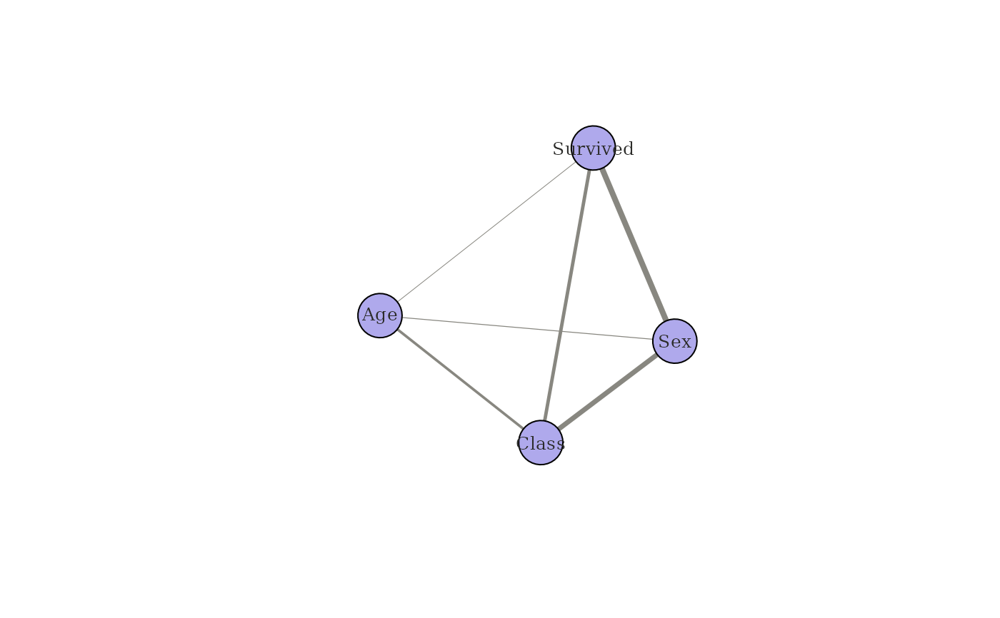
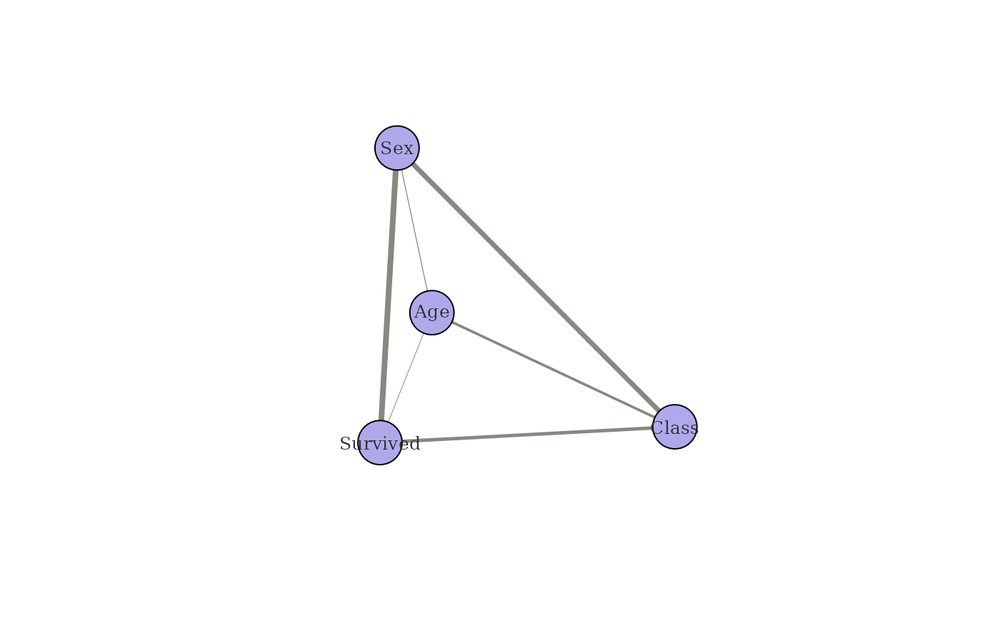
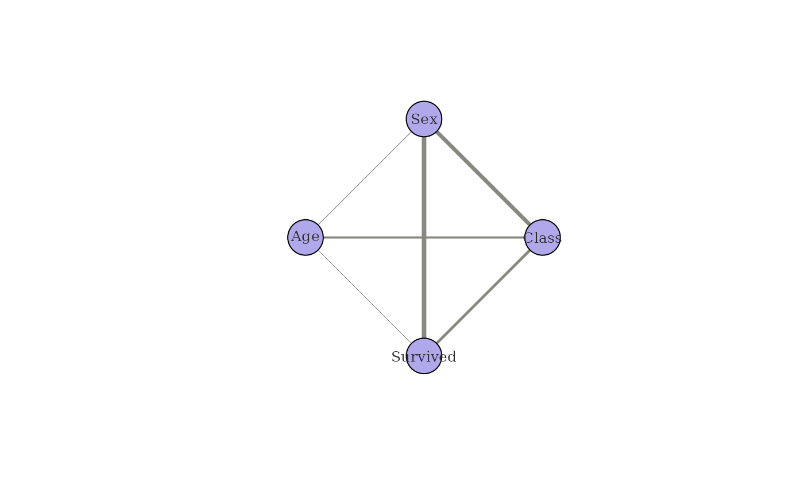

Visualises the undirected weighted association network. The default
renderer uses igraph's base-graphics plot. If engine = "ggraph"
is requested and ggraph is installed, a ggplot2-based plot is
returned as a ggplot object.
Arguments
- x
A
catgraphobject.- engine
Character. Either
"igraph"(default) or"ggraph".- layout
Character. Layout algorithm. For
engine = "igraph", one of"fr"(Fruchterman-Reingold, default),"kk"(Kamada-Kawai),"circle","grid","graphopt","nicely", or"random". Forengine = "ggraph", any layout string accepted byggraph::ggraph.- edge_width_range
Numeric vector of length 2. Minimum and maximum line widths mapped to edge weights. Default
c(0.5, 4).- vertex_size
Numeric. Vertex size for
engine = "igraph". Default30.- vertex_color
Character. Vertex fill colour.
- edge_color
Character. Edge colour.
- label_size
Numeric. Label character expansion. Default
0.8.- title
Character. Plot title. Default
NULL.- ...
Additional arguments passed to the underlying renderer.
Value
For engine = "igraph": invisibly returns x (called
for its side effect).
For engine = "ggraph": a ggplot object.
Details
In v0.3.0 and earlier, the layout argument was silently ignored by
the igraph branch (Fruchterman-Reingold was always used). From 0.4.0
onwards, layout is respected for both engines.
Examples
df <- expand_table(Titanic)
cg <- catgraph(df)
plot(cg)

plot(cg, layout = "kk")

plot(cg, layout = "circle")
